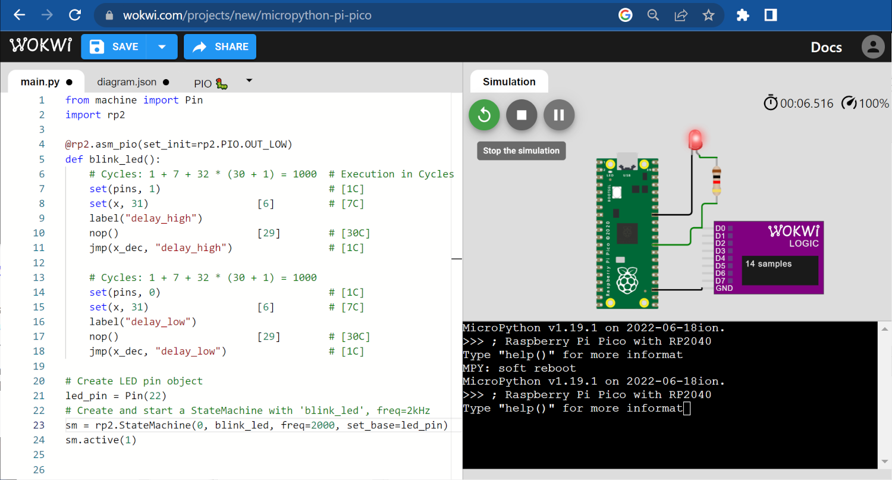
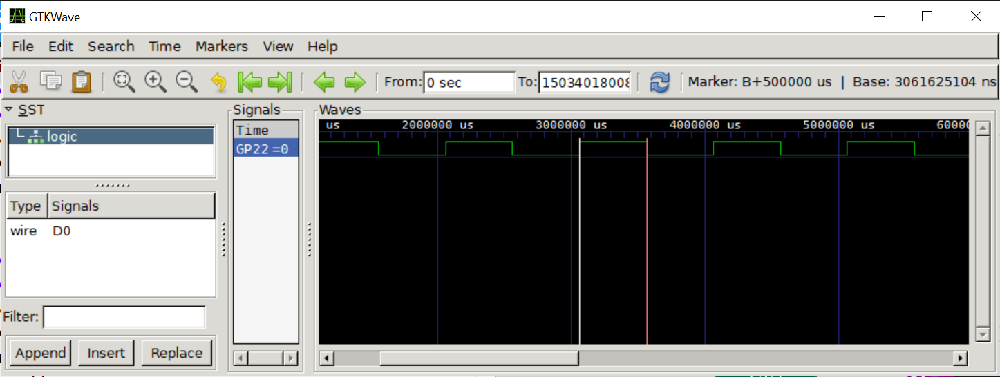

การเขียนโปรแกรม MicroPython สำหรับบอร์ด Pico เพื่อทำให้ LED กระพริบด้วยวิธีที่แตกต่างกัน#
Keywords: Python 3, MicroPython, Raspberry Pico, RP2040, Thonny IDE, WokWi Simulator
▷ MicroPython - LED Blink#
ในการเขียนโค้ดเพื่อกำหนดสถานะลอจิกของขา GPIO ซึ่งใช้เป็นขาดิจิทัล-เอาต์พุต (เช่น ต่อกับวงจร LED บนบอร์ดไมโครคอนโทรลเลอร์ หรือต่อวงจรเพิ่มภายนอก) ก็มีรูปแบบการใช้คำสั่งหรือวิธีเขียนโค้ดที่แตกต่างกัน และมีมากกว่าหนึ่งวิธี บทความนี้สาธิตตัวอย่างโค้ดไมโครไพธอน เพื่อนำไปทดลองใช้กับบอร์ด Pico
from machine import Pin
import time
DELAY_MS = 500
DELAY_SEC = DELAY_MS / 1000
DELAY_US = DELAY_MS * 1000
# Use onboard LED: Use the GPIO25 pin or 'LED'
pin = 25
# Create a Pin object for the onboard LED
led = Pin( pin, Pin.OUT )
# Method 1
print( 'Toggle LED using the led.value( 0|1 ) function.' )
for i in range(10):
led.value(1)
print( 'LED: {}'.format( led.value() ) )
time.sleep( DELAY_SEC )
led.value(0)
print( 'LED: {}'.format( led.value() ) )
time.sleep( DELAY_SEC )
# Method 2
print( 'Toggle LED using the led.on() / led.off() functions.' )
for i in range(10):
led.on()
print( 'LED: {}'.format( led.value() ) )
time.sleep_ms( DELAY_MS )
led.off()
print( 'LED: {}'.format( led.value() ) )
time.sleep_ms( DELAY_MS )
# Method 3
print( 'Toggle LED using the led.toggle() function.' )
for i in range(10):
led.toggle()
print( 'LED: {}'.format( led.value() ) )
time.sleep_us( DELAY_US )
# Method 4
print( 'Toggle LED using read-modify-write.' )
for i in range(10):
new_value = not led.value()
led.value( new_value )
print( 'LED: {}'.format( new_value ) )
time.sleep_us( DELAY_US )
# Method 5
print( 'Toggle LED without delay.' )
# Get current timestamp (in msec)
saved_ts = time.ticks_ms()
count = 0
while True:
# Get current timestamp
now = time.ticks_ms()
# Compute time difference
delta = time.ticks_diff( now, saved_ts )
if delta >= DELAY_MS:
saved_ts = now # Update the saved timestamp
led.toggle() # Toggle the LED
print( 'LED: {}'.format( led.value() ) )
count += 1
if count >= 10:
break
print('Done....')
▷ การใช้ Software Timer#
ตัวอย่างนี้สาธิตการเปิดใช้งานไทม์เมอร์ที่ทำงานด้วยซอฟต์แวร์ (Software Timer) สำหรับไมโครไพธอน โดยกำหนดให้ทำงานแบบมีคาบและทำซ้ำ (Periodic Mode) และมีคาบหรือช่วงเวลาเท่ากับ 500 มิลลิวินาที
เมื่อครบหนึ่งคาบเวลา จะมีการทำคำสั่งโดยเรียกใช้ฟังก์ชัน Callback ในตัวอย่างนี้ได้กำหนดให้ฟังก์ชันดังกล่าวทำหน้าที่เปลี่ยนสถานะลอจิกของขา LED
from machine import Pin, Timer
import time
# Use onboard LED: Use the GPIO25 pin or 'LED'
pin = 25
# Create a Pin object for the onboard LED
led = Pin( pin, Pin.OUT )
# Set the timer period (in msec)
PERIOD_MS = 500
# Create a software timer objecte
timer = Timer()
# Configure the timer to operate in periodic mode
# Toggle the LED at the end of each period (500msec)
timer.init( period=PERIOD_MS,
mode=Timer.PERIODIC,
callback=lambda t: led.toggle() )
# Delay for 5 seconds
time.sleep_ms( 5000 )
# Stop the timer
timer.init( callback=None )
timer.deinit()
print( 'Done...')
▷ การสร้างสัญญาณ PWM สำหรับขาเอาต์พุต-ดิจิทัล#
ตัวอย่างนี้สาธิตการเปิดใช้งาน PWM (Pulse Width Modulation) สำหรับขา GPIO โดยเลือกใช้ขา GP25 ของบอร์ด Pico และตั้งค่าความถี่ต่ำสำหรับการทำงานของ PWM และลดความถี่ของซีพียูลง เพื่อให้ใช้ความถี่ต่ำสำหรับ PWM ได้ ทำให้มองเห็นการเปลี่ยนแปลงของสถานะลอจิกที่ขา LED ได้
from machine import Pin, PWM
import time
# Use onboard LED
pin = 25 # Use 25 or 'LED'
# Create a Pin object for the onboard LED
led = Pin( pin, Pin.OUT )
# Reduce the CPU frequency: 50MHz
machine.freq( int(50e6) )
print( 'CPU freq. {} MHz'.format( machine.freq()//1e6) )
# Create PWM object from a Pin object
pwm = PWM( led )
# Set the PWM frequency: 5Hz
pwm.freq(5)
# Set the PWM duty cycle (16-bit value) to 50%
pwm.duty_u16( 2**15 )
# Wait ofor 5 seconds
time.sleep_ms( 5000 )
# Turn off PWM on the LED pin
pwm.deinit()
print('Done')
การใช้สัญญาณ PWM เพื่อทำให้ LED สว่างขึ้นและดับลง ก็เป็นอีกวิธีหนึ่ง กล่าวคือ การเปลี่ยนค่า Duty Cycle ของสัญญาณ PWM ให้เพิ่มขึ้นและลดลงต่อเนื่องไปเรื่อย ๆ ดังนั้นจึงทำให้ LED กระพริบได้
ในโค้ดตัวอย่างต่อไปนี้ มีการสร้างสัญญาณ PWM ที่มีความถี่ 1000Hz และมีการเปลี่ยนแปลงค่า Duty Cycle เพิ่มขึ้นจาก 0..100% และลดลงจาก 100..0% ตามลำดับ โดยเว้นช่วงเวลาในการเปลี่ยนค่า ทุก ๆ 5 มิลลิวินาที
from machine import Pin, PWM
import time
# Use onboard LED and PWM output pin
pwm = PWM( Pin(25) )
# Set PWM frequency to 1kHz
pwm.freq(1000)
# Set the counter variable to 0
cnt = 0
try:
N = 200
while True:
# Compute the new value for PWM duty cycle
if cnt <= N//2:
duty = cnt
else:
duty = (N-1) - cnt
value = duty * (2**16-1)//(N//2)
# Update the PWM duty cycle
pwm.duty_u16( value )
# Increment the counter value by 1
cnt = (cnt+1) % N
# Delay for 5 msec
time.sleep_ms(5)
except KeyboardInterrupt:
pass
finally:
# Set the PWM duty cycle to 0 (ns)
pwm.duty_ns(0)
# Deinitialize the GPIO pin used for PWM output
pwm.deinit()
▷ การเขียนโปรแกรมแบบ Multi-Threading#
ไมโครไพธอนรองรับการใช้งานไลบรารี _thread เพื่อใช้สำหรับการเขียนโปรแกรมแบบ "มัลติเธรด"
หรือการทำงานแบบหลายงานไปพร้อม ๆ กัน ได้ (Concurrency)
ในโค้ดตัวอย่างนี้มีการสร้างเธรด (Thread) โดยใช้คำสั่ง _thread.start_new_thread(...)
และสร้างฟังก์ชันที่มีชื่อว่า led_task() สำหรับการทำงานของเธรดดังกล่าว
ซึ่งจะทำให้ LED สลับสถานะลอจิกตามช่วงเวลาที่ได้กำหนดไว้
from machine import Pin
import time
import _thread
def led_task( led_pin, delay_ms ):
global thread_running
lock.acquire() # Acquire lock
print( 'LED Task: Thread ID=%d' % _thread.get_ident() )
lock.release() # Release lock
while thread_running:
led_pin.toggle() # Toggle the LED pin
time.sleep_ms( delay_ms )
thread_running = False
lock.acquire() # Acquire lock
print('LED Task: done')
lock.release() # Release lock
lock = None
thread_running = True
# Create a lock (mutex) object
lock = _thread.allocate_lock()
# Create an LED pin object
led_pin = Pin( 25, Pin.OUT )
# Create a new thread and run it on the second CPU core
# blink the LED on GPIO25 pin with 500ms delay time
_thread.start_new_thread( led_task, (led_pin,500) )
try:
lock.acquire() # Acquire lock
print( 'Main: Thread ID=%d' %_thread.get_ident() )
lock.release() # Release lock
while thread_running:
time.sleep_ms(10)
except KeyboardInterrupt:
pass
finally:
thread_running = False
lock.acquire() # Acquire lock
print('Main thread: Done')
lock.release() # Release lock
led_pin.value(0)
try:
time.sleep(1.0)
except KeyboardInterrupt:
pass
▷ การเขียนโปรแกรมโดยใช้ Asyncio สำหรับไมโครไพธอน#
Asyncio เป็นไลบรารีที่ใช้สำหรับการสร้างและใช้งานฟังก์ชันในรูปแบบที่เรียกว่า
Coroutine และเป็นรูปแบบหนึ่งของการเขียนโปรแกรมแบบมัลติทาสก์
(เรียกว่า Cooperative Multitasking)
ไมโครไพธอนก็มีไลบรารีชื่อ uasyncio
ไว้ให้ใช้งาน เช่น
uasyncio.create_task(...)สร้างทาสก์ใหม่เพื่อใช้กับฟังก์ชันที่เป็น Coroutine และรอให้ถูกเรียกใช้โดย Async. IO Scheduleruasyncio.run(...)สร้างทาสก์ใหม่เพื่อใช้กับฟังก์ชันที่เป็น Coroutineuasyncio.sleep_ms(...)เป็นฟังก์ชัน Coroutineที่ใช้สำหรับหน่วงเวลา (หน่วยเป็นมิลลิวินาที)
from machine import Pin
import uasyncio
async def blink(led, period_ms):
while True:
led.on()
await uasyncio.sleep_ms( period_ms//2 )
led.off()
await uasyncio.sleep_ms( period_ms//2 )
# The entry point for asyncio program
async def main(led):
uasyncio.create_task( blink(led, 1000) )
while True:
await uasyncio.sleep_ms( 100 )
led = Pin(25, Pin.OUT)
try:
# Start event loop and run entry point coroutine
uasyncio.run( main(led) )
except KeyboardInterrupt:
pass
finally:
led.off()
print('Done...')
ถ้าลองปรับเปลี่ยนโค้ดตัวอย่าง โดยเพิ่มปุ่มกด (Active-low Push Button)
ที่ขา GP18 และตรวจสอบการกดปุ่ม ถ้ามีการกดปุ่ม ให้หยุดการทำงานของทาสก์และการทำงานของฟังก์ชัน main
ก็มีแนวทางดังนี้
from machine import Pin
import uasyncio
async def blink(led, period_ms):
while True:
led.on()
await uasyncio.sleep_ms(period_ms//2)
led.off()
await uasyncio.sleep_ms(period_ms//2)
# The entry point for asyncio program
async def main(led,btn):
uasyncio.create_task(blink(led, 1000))
await wait_button(btn)
async def wait_button(btn):
btn_prev = btn.value()
while (btn.value() == 1) or (btn.value() == btn_prev):
btn_prev = btn.value()
await uasyncio.sleep_ms(50)
print('Button pressed')
led = Pin(25, Pin.OUT)
btn = Pin(18, Pin.IN, Pin.PULL_UP)
try:
# Start event loop and run entry point coroutine
uasyncio.run( main(led, btn) )
except KeyboardInterrupt:
pass
finally:
led.off()
print('Done...')
▷ การใช้งาน PIO ร่วมกับขา GPIO#
ภายในชิป RP2040 มีวงจรที่เรียกว่า PIO (Programming I/O) อยู่ 2 ชุด (เรียกว่า PIO0 และ PIO1) แต่ละชุดประกอบไปด้วยหน่วยย่อยที่เรียกว่า State Machines (SMs) จำนวน 4 ชุด ที่ใช้หน่วยความจำร่วมกันสำหรับเก็บคำสั่งได้สูงสุด 32 คำสั่ง (เรียกชื่อเป็น SM0..SM3 และ SM4..SM7 ตามลำดับ)
SM สามารถเข้าถึงขา GPIO ได้ และตัวอย่างนี้สาธิตการใช้งาน SM0 ของ PIO0 และใช้งานร่วมกับขา GPIO จำนวน 1 ขา
การทำงานของ SM ต้องใช้สัญญาณ Clock โดยมีตัวหารความถี่ทีเรียกว่า Fractional Clock Divider ที่โปรแกรมค่าได้ และรับสัญญาณมาจาก System Clock ดังนั้นจึงปรับความเร็วในการทำงานได้ เนื่องจากความเร็วในการทำงานของซีพียูสำหรับ MicroPython-RP2040 คือ 125 MHz ความถี่ตำสุดที่เลือกใช้ได้คือ
การสร้างอ็อปเจกต์เพื่อใช้งาน SM ของ PIO Unit ในภาษาไมโครไพธอน จะใช้คำสั่ง
rp.StateMachine(...)
ของไลบรารี rp2
ในตัวอย่างนี้ ได้เลือกใช้ SM0 ตั้งค่าความถี่ไว้เท่ากับ 2000 Hz
และมีการสร้างฟังก์ชันชื่อ blink_led() ที่เกี่ยวข้องกับการทำงานของ SM0 ซึ่งประกอบด้วยคำสั่งในระดับ
Assembly เพื่อทำให้สถานะลอจิกที่ขา GPIO ที่เกี่ยวข้อง สลับสถานะระหว่าง 1 กับ 0
มีการเว้นระยะเวลาเท่ากับ 1000 ไซเคิล ดังนั้นเมื่อทำคำสั่งใน blink_led() ครบแล้ว
(ใช้เวลาทั้งหมด 2000 ไซเคิล) ก็จะทำคำสั่งของฟังก์ชันนี้ซ้ำ
ในตัวอย่างนี้ได้เลือกใช้ขา 22 แต่ถ้าต้องการใช้ Onboard LED ของบอร์ด Pico ให้เปลี่ยนไปใช้ขาหมายเลข 25
from machine import Pin
import rp2
@rp2.asm_pio(set_init=rp2.PIO.OUT_LOW)
def blink_led():
wrap_target()
# Cycles: 1 + 7 + 32 * (30 + 1) = 1000 # Cycles
set(pins, 1) # [1C]
set(x, 31) [6] # [7C]
label("delay_high")
nop() [29] # [30C]
jmp(x_dec, "delay_high") # [1C]
# Cycles: 1 + 7 + 32 * (30 + 1) = 1000
set(pins, 0) # [1C]
set(x, 31) [6] # [7C]
label("delay_low")
nop() [29] # [30C]
jmp(x_dec, "delay_low") # [1C]
wrap()
# Create LED pin object
led_pin = Pin(22)
# Create State Machine
# - Use the SM0
# - Set the frequency for SM0 to 2kHz
# - Use 'blink_led' as the callback function
# - Set the led pin as the base pin
sm = rp2.StateMachine(0, blink_led, freq=2000, set_base=led_pin)
# Activate the SM0
sm.active(1)

รูป: ตัวอย่างการใช้ Wokwi Simulator จำลองการทำงานของโค้ดไมโครไพธอน

รูป: การแสดงรูปคลื่นสัญญาณดิจิทัลที่ได้จากขา GP22 และวัดความกว้างของพัลส์ได้ 500 msec
▷ กล่าวสรุป#
บทความนี้ได้นำเสนอตัวอย่างการเขียนโค้ดเพื่อกำหนดค่าและสลับสถานะลอจิกของขาเอาต์พุต-ดิจิทัล ซึ่งจะทำให้วงจร LED ที่ใช้งานกับบอร์ด Pico กระพริบได้ และได้แสดงให้เห็นว่า มีรูปแบบการเขียนโค้ดได้มากกว่าหนึ่งวิธี
This work is licensed under a Creative Commons Attribution-ShareAlike 4.0 International License.
Created: 2023-04-02 | Last Updated: 2023-04-04